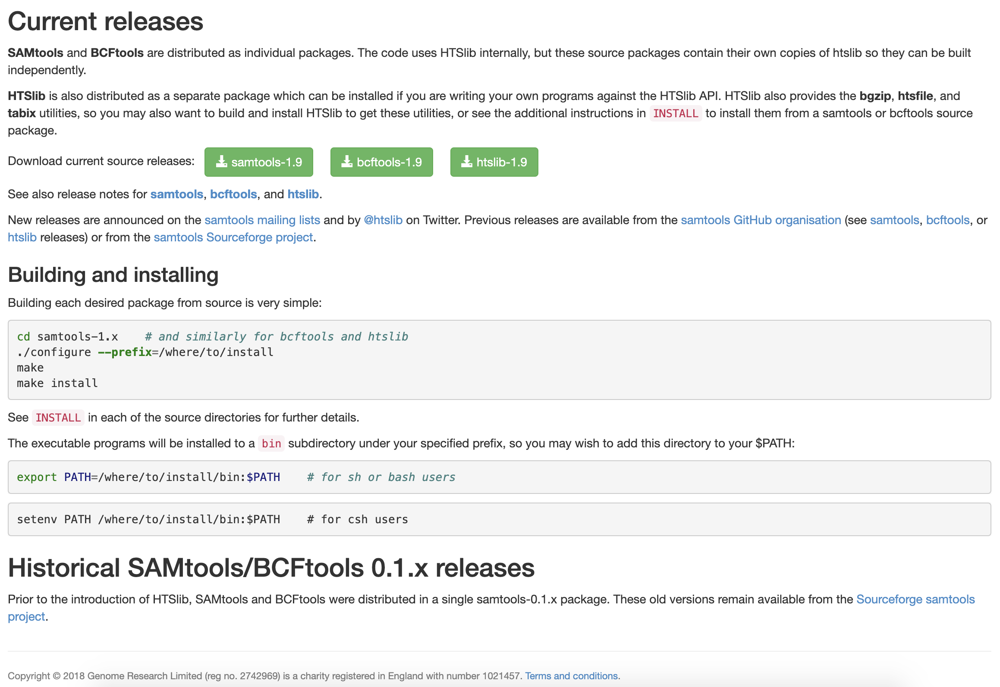

Last updated: 2021-12-22
Checks: 7 0
Knit directory: reproducible_bioinformatics/
This reproducible R Markdown analysis was created with workflowr (version 1.6.2). The Checks tab describes the reproducibility checks that were applied when the results were created. The Past versions tab lists the development history.
Great! Since the R Markdown file has been committed to the Git repository, you know the exact version of the code that produced these results.
Great job! The global environment was empty. Objects defined in the global environment can affect the analysis in your R Markdown file in unknown ways. For reproduciblity it’s best to always run the code in an empty environment.
The command set.seed(20191203) was run prior to running the code in the R Markdown file. Setting a seed ensures that any results that rely on randomness, e.g. subsampling or permutations, are reproducible.
Great job! Recording the operating system, R version, and package versions is critical for reproducibility.
Nice! There were no cached chunks for this analysis, so you can be confident that you successfully produced the results during this run.
Great job! Using relative paths to the files within your workflowr project makes it easier to run your code on other machines.
Great! You are using Git for version control. Tracking code development and connecting the code version to the results is critical for reproducibility.
The results in this page were generated with repository version 7f61a4b. See the Past versions tab to see a history of the changes made to the R Markdown and HTML files.
Note that you need to be careful to ensure that all relevant files for the analysis have been committed to Git prior to generating the results (you can use wflow_publish or wflow_git_commit). workflowr only checks the R Markdown file, but you know if there are other scripts or data files that it depends on. Below is the status of the Git repository when the results were generated:
Ignored files:
Ignored: .Rproj.user/
Note that any generated files, e.g. HTML, png, CSS, etc., are not included in this status report because it is ok for generated content to have uncommitted changes.
These are the previous versions of the repository in which changes were made to the R Markdown (analysis/conda.Rmd) and HTML (docs/conda.html) files. If you’ve configured a remote Git repository (see ?wflow_git_remote), click on the hyperlinks in the table below to view the files as they were in that past version.
| File | Version | Author | Date | Message |
|---|---|---|---|---|
| Rmd | 7f61a4b | Dave Tang | 2021-12-22 | Some more tips |
| html | b2ffe55 | davetang | 2020-04-22 | Build site. |
| Rmd | 20b6e0c | davetang | 2020-04-22 | Miscellaneous |
| html | d06531b | davetang | 2019-12-05 | Build site. |
| html | 5dc4fe0 | davetang | 2019-12-05 | Build site. |
| Rmd | 179c2bb | davetang | 2019-12-05 | wflow_publish(files = c(“analysis/conda.Rmd”, “analysis/docker.Rmd”, “analysis/index.Rmd”, |
| html | 9aa9aa4 | davetang | 2019-12-05 | Build site. |
| Rmd | ec7204f | davetang | 2019-12-05 | wflow_publish(files = c(“analysis/about.Rmd”, “analysis/conda.Rmd”, “analysis/docker.Rmd”, |
| html | 7b114c5 | First Last | 2019-12-04 | Build site. |
| Rmd | a4180a4 | First Last | 2019-12-04 | wflow_publish(files = c(“analysis/conda.Rmd”, “analysis/index.Rmd”)) |
This tutorial was adopted from here. The output shown is based on running the commands inside a container using the continuumio/miniconda Docker image. To follow this tutorial, make sure you have Docker installed and use docker pull to download the latest container.
docker pull continuumio/miniconda3The objective of the workshop is to demonstrate how Conda can be used to simplify the installation of bioinformatic tools and to create reproducible (and separate) environments.
From the Conda documentation:
Conda is an open source package management system and environment management system that runs on Windows, macOS and Linux. Conda quickly installs, runs and updates packages and their dependencies. Conda easily creates, saves, loads and switches between environments on your local computer. It was created for Python programs, but it can package and distribute software for any language.If you have run into dependency problems before when trying to install bioinformatic tools, Conda helps deal with this. Furthermore, Conda makes it easier to install and work with incompatible tools.
Anaconda is a distribution of Conda. It is a data science platform that comes with a lot of packages (too many in my opinion).
Miniconda is a minimal installer for Conda. It is a small, bootstrap version of Anaconda that includes only Conda, Python, the packages they depend on, and a small number of other useful packages, including pip, zlib and a few others. I prefer using Miniconda and only installing tools that I need.
Bioconda is a distribution of bioinformatics software realised as a channel for the versatile Conda package manager. Conda channels are simply the locations where packages are stored. Most widely used bioinformatic tools are available on the Bioconda channel, which hosts over 6,000 bioinformatics packages.
For this workshop we are using Conda inside a Docker container. Once you have pulled the latest image, run the following command.
# run new container
docker run -it --rm continuumio/miniconda bashYour command prompt should look something like after running the command above:
(base) root@d470a3e9da91:/# Like any good tool, if you type conda without any parameters you will get the usage and all the subcommands.
conda
usage: conda [-h] [-V] command ...
conda is a tool for managing and deploying applications, environments and packages.
Options:
positional arguments:
command
clean Remove unused packages and caches.
config Modify configuration values in .condarc. This is modeled
after the git config command. Writes to the user .condarc
file (/root/.condarc) by default.
create Create a new conda environment from a list of specified
packages.
help Displays a list of available conda commands and their help
strings.
info Display information about current conda install.
init Initialize conda for shell interaction. [Experimental]
install Installs a list of packages into a specified conda
environment.
list List linked packages in a conda environment.
package Low-level conda package utility. (EXPERIMENTAL)
remove Remove a list of packages from a specified conda environment.
uninstall Alias for conda remove.
run Run an executable in a conda environment. [Experimental]
search Search for packages and display associated information. The
input is a MatchSpec, a query language for conda packages.
See examples below.
update Updates conda packages to the latest compatible version.
upgrade Alias for conda update.
optional arguments:
-h, --help Show this help message and exit.
-V, --version Show the conda version number and exit.
conda commands available from other packages:
envWe can find out what version of Conda we are using.
conda --version
conda 4.7.10To see the full documentation for any command, type the command followed by --help. For example, to learn about the conda update command:
conda update --helpWe will now make sure that Conda is up to date by using conda update. Conda will compare versions and let you know what is available to install. It will also tell you about other packages that will be automatically updated or changed with the update.
# when prompted enter "y"
conda update conda
conda --version
conda 4.7.12You can also update all Conda packages to the latest compatible version.
# don't need to run this
conda update --allConda will download and cache temporary files; remember to use conda clean periodically to clean up temp files.
conda clean -aInstalling bcftools is just a single command using the Bioconda channel.
conda install -c bioconda bcftools
cd /tmp
wget https://github.com/davetang/learning_vcf_file/raw/master/aln_consensus.bcf
# get all SNPs, ignore the metadata, and view the first two lines
bcftools view -v snps aln_consensus.bcf | grep -v "^#" | head -2
1000000 336 . A G 221.999 . DP=112;VDB=0.756462;SGB=-0.693147;MQ0F=0;AF1=1;AC1=2;DP4=0,0,102,0;MQ=60;FQ=-281.989 GT:PL 1/1:255,255,0
1000000 378 . T C 221.999 . DP=101;VDB=0.704379;SGB=-0.693147;MQ0F=0;AF1=1;AC1=2;DP4=0,0,99,0;MQ=60;FQ=-281.989 GT:PL 1/1:255,255,0Here’s how you would install bcftools without Conda.

Using Conda, you can create an isolated environment for your project. An environment is a set of packages that can be used in one or multiple projects. The default environment with Miniconda is the base environment. I don’t recommend installing all your packages/tools under the same environment.
There are two ways of creating a Conda environment.
environment.yml).An example of an environment file (environment.yml) I used for a specific project.
name: new_project
channels:
- bioconda
- anaconda
- conda-forge
- defaults
dependencies:
- fastqc
- multiqc
- cutadapt
- bwa
- samtools
- macs2
- bedtools
- deeptools
- minimap2
- star
- parallel
- idrNow, let’s use this environment.yml environment file to install an older version of bwa in an isolated environment called bwa_old.
name: bwa_old
channels:
- bioconda
dependencies:
- bwa=0.7.15Create the environment.
wget https://raw.githubusercontent.com/davetang/reproducible_bioinformatics/master/environment.yml
conda env create --file environment.yml
# check list of environments
conda env list
# conda environments:
#
base * /opt/conda
bwa_old /opt/conda/envs/bwa_oldActivate the environment. The (bwa_old) in the beginning of the line indicates that we are curently using the bwa_old Conda environment.
conda activate bwa_old
# your prompt should change to
# (bwa_old) root@d470a3e9da91:/tmp#
bwa
Program: bwa (alignment via Burrows-Wheeler transformation)
Version: 0.7.15-r1140
Contact: Heng Li <lh3@sanger.ac.uk>Deactivate the environment.
conda deactivate
# your prompt will change back to
# (base) root@d470a3e9da91:/tmp#We can create Conda environments by specifying the name, channel, and list of packages within the terminal. In the example below, we are creating the test_env environment that uses python 2.7 and a list of libraries: numpy, matplotlib, pandas.
conda create -c conda-forge -n test_env python=2.7 numpy matplotlib pandasConda will solve any dependencies between the packages like before and create a new environment with those packages. I prefer creating environments using an environment file rather than on the command line.
Before deleting an environment make sure you are not currently using the environment or you will get an error.
conda env remove -n bwa_oldThe commands below will list all the packages in the bwa_old and base environments. The list will include versions of each package, the specific build, and the channel that the package was downloaded from. conda list is useful to ensure that you have installed the packages that you desire.
conda list -n bwa_old
# packages in environment at /opt/conda/envs/bwa_old:
#
# Name Version Build Channel
_libgcc_mutex 0.1 main
bwa 0.7.15 1 bioconda
libgcc 7.2.0 h69d50b8_2
libgcc-ng 9.1.0 hdf63c60_0
libstdcxx-ng 9.1.0 hdf63c60_0
zlib 1.2.11 h7b6447c_3
conda list -n base
# packages in environment at /opt/conda:
#
# Name Version Build Channel
_libgcc_mutex 0.1 main
asn1crypto 1.2.0 py27_0
ca-certificates 2019.11.27 0
certifi 2019.11.28 py27_0
cffi 1.13.2 py27h2e261b9_0
chardet 3.0.4 py27_1003
conda 4.7.12 py27_0
conda-package-handling 1.6.0 py27h7b6447c_0
cryptography 2.8 py27h1ba5d50_0
enum34 1.1.6 py27_1
futures 3.3.0 py27_0
idna 2.8 py27_0
ipaddress 1.0.23 py_0
libedit 3.1.20181209 hc058e9b_0
libffi 3.2.1 hd88cf55_4
libgcc-ng 9.1.0 hdf63c60_0
libstdcxx-ng 9.1.0 hdf63c60_0
ncurses 6.1 he6710b0_1
openssl 1.1.1d h7b6447c_3
pip 19.3.1 py27_0
pycosat 0.6.3 py27h14c3975_0
pycparser 2.19 py27_0
pyopenssl 19.1.0 py27_0
pysocks 1.7.1 py27_0
python 2.7.16 h9bab390_0
readline 7.0 h7b6447c_5
requests 2.22.0 py27_0
ruamel_yaml 0.15.46 py27h14c3975_0
setuptools 42.0.2 py27_0
six 1.13.0 py27_0
sqlite 3.30.1 h7b6447c_0
tk 8.6.8 hbc83047_0
tqdm 4.40.0 py_0
urllib3 1.24.2 py27_0
wheel 0.33.6 py27_0
yaml 0.1.7 had09818_2
zlib 1.2.11 h7b6447c_3 Conda packages are files containing a bundle of resources: usually libraries and executables, but not always. In principle, Conda packages can include data, images, notebooks, or other assets.
It is important to be careful when downloading packages and use only trusted sources. Conda forge is a reliable source for many popular python packages. Anaconda Cloud is a package management service that makes it easy to find, access, store and share public and private notebooks, environments, and Conda and PyPI packages. Bioconda is a trusted channel for the conda package manager specialising in bioinformatics software.
If you have a few trusted channels that you prefer to use, you can pre-configure these so that each time you are creating an environment, you won’t need to explicitly declare the channel. It is important to add them in the following order so that the priority is set correctly, with conda-forge with the highest priority. See managing channels for more information.
conda config --add channels defaults
conda config --add channels bioconda
conda config --add channels conda-forgeTo see your channels use --show.
conda config --show channels
channels:
- conda-forge
- bioconda
- defaultsIf you want to reorder your channels, simply add them again.
After adding channels, you can search for packages.
conda search bwa
Loading channels: done
# Name Version Build Channel
bwa 0.5.9 0 bioconda
bwa 0.5.9 1 bioconda
bwa 0.5.9 ha92aebf_2 bioconda
bwa 0.6.2 0 bioconda
bwa 0.6.2 1 bioconda
bwa 0.6.2 ha92aebf_2 bioconda
bwa 0.7.3a 0 bioconda
bwa 0.7.3a 1 bioconda
bwa 0.7.3a h84994c4_3 bioconda
bwa 0.7.3a h84994c4_4 bioconda
bwa 0.7.3a ha92aebf_2 bioconda
bwa 0.7.4 h84994c4_1 bioconda
bwa 0.7.4 ha92aebf_0 bioconda
bwa 0.7.4 hed695b0_2 bioconda
bwa 0.7.4 hed695b0_3 bioconda
bwa 0.7.8 0 bioconda
bwa 0.7.8 1 bioconda
bwa 0.7.8 h84994c4_3 bioconda
bwa 0.7.8 ha92aebf_2 bioconda
bwa 0.7.8 hed695b0_4 bioconda
bwa 0.7.8 hed695b0_5 bioconda
bwa 0.7.12 0 bioconda
bwa 0.7.12 1 bioconda
bwa 0.7.13 0 bioconda
bwa 0.7.13 1 bioconda
bwa 0.7.15 0 bioconda
bwa 0.7.15 1 bioconda
bwa 0.7.16 pl5.22.0_0 bioconda
bwa 0.7.17 h84994c4_4 bioconda
bwa 0.7.17 h84994c4_5 bioconda
bwa 0.7.17 ha92aebf_3 bioconda
bwa 0.7.17 hed695b0_6 bioconda
bwa 0.7.17 pl5.22.0_0 bioconda
bwa 0.7.17 pl5.22.0_1 bioconda
bwa 0.7.17 pl5.22.0_2 bioconda Use conda remove to remove packages.
conda remove bcftoolsCommandNotFoundError: Your shell has not been properly configured to use 'conda activate'.You can either use source instead of conda activate
source activate my_envOr use source conda.sh (change accordingly if you used Anaconda or installed it somewhere else). See here for more information.
source ~/miniconda3/etc/profile.d/conda.sh
conda activate my_envUse Mamba, which is a reimplementation of the conda package manager and is much faster. Install mamba from conda-forge.
conda install mamba -n base -c conda-forgeIn addition, you can separate tools into different environments instead of installing everything into the base environment.
conda create -c bioconda -n hts bwa samtools bcftoolsSometimes dependencies are not available because additional channels have not been included. For example, make sure conda-forge has been added by running the following command to list all added channels.
conda config --show channelsTry to use Docker to install the tool. I have a Dockerfile that creates an image with commonly used tools and libraries for building and installing bioinformatics software.
sessionInfo()R version 4.1.0 (2021-05-18)
Platform: x86_64-pc-linux-gnu (64-bit)
Running under: Ubuntu 20.04.2 LTS
Matrix products: default
BLAS/LAPACK: /usr/lib/x86_64-linux-gnu/openblas-pthread/libopenblasp-r0.3.8.so
locale:
[1] LC_CTYPE=en_US.UTF-8 LC_NUMERIC=C
[3] LC_TIME=en_US.UTF-8 LC_COLLATE=en_US.UTF-8
[5] LC_MONETARY=en_US.UTF-8 LC_MESSAGES=C
[7] LC_PAPER=en_US.UTF-8 LC_NAME=C
[9] LC_ADDRESS=C LC_TELEPHONE=C
[11] LC_MEASUREMENT=en_US.UTF-8 LC_IDENTIFICATION=C
attached base packages:
[1] stats graphics grDevices utils datasets methods base
other attached packages:
[1] workflowr_1.6.2
loaded via a namespace (and not attached):
[1] Rcpp_1.0.7 whisker_0.4 knitr_1.33 magrittr_2.0.1
[5] R6_2.5.0 rlang_0.4.11 fansi_0.5.0 stringr_1.4.0
[9] tools_4.1.0 xfun_0.24 utf8_1.2.1 git2r_0.28.0
[13] htmltools_0.5.1.1 ellipsis_0.3.2 rprojroot_2.0.2 yaml_2.2.1
[17] digest_0.6.27 tibble_3.1.2 lifecycle_1.0.0 crayon_1.4.1
[21] later_1.2.0 vctrs_0.3.8 promises_1.2.0.1 fs_1.5.0
[25] glue_1.4.2 evaluate_0.14 rmarkdown_2.9 stringi_1.7.2
[29] compiler_4.1.0 pillar_1.6.1 httpuv_1.6.1 pkgconfig_2.0.3